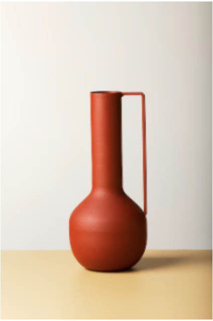
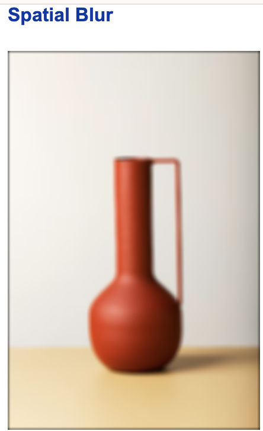
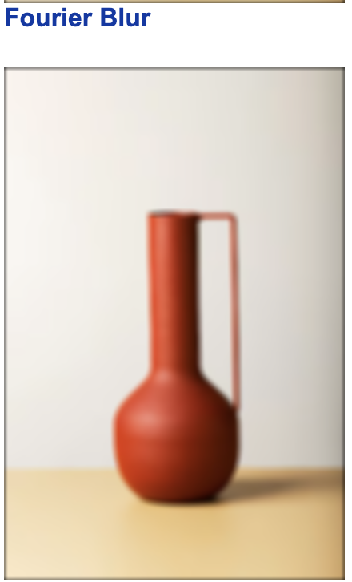
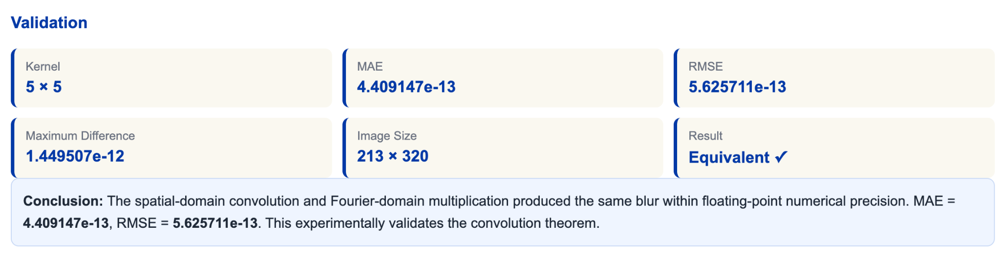

Module 3 - Image Blurring
Spatial-domain filtering versus Fourier-domain filtering.
Input
Upload an image or capture one from the camera.
Results
Original Image
Spatial Blur
Fourier Blur
Difference Image
Validation
Kernel-
MAE-
RMSE-
Maximum Difference-
Image Size-
ResultNot run
Run the experiment to compare the two filtering approaches.
Results Obtained During Experiment
The images below are saved outputs from the completed experiment. They are shown permanently so the obtained results can be reviewed without rerunning the demo.




Theory
Spatial domain: g(x,y) = f(x,y) * h(x,y)
Fourier domain: G(u,v) = F(u,v)H(u,v)
Inverse transform: g(x,y) = F-1{F(u,v)H(u,v)}
Therefore, convolution in space is equivalent to multiplication in the Fourier domain.